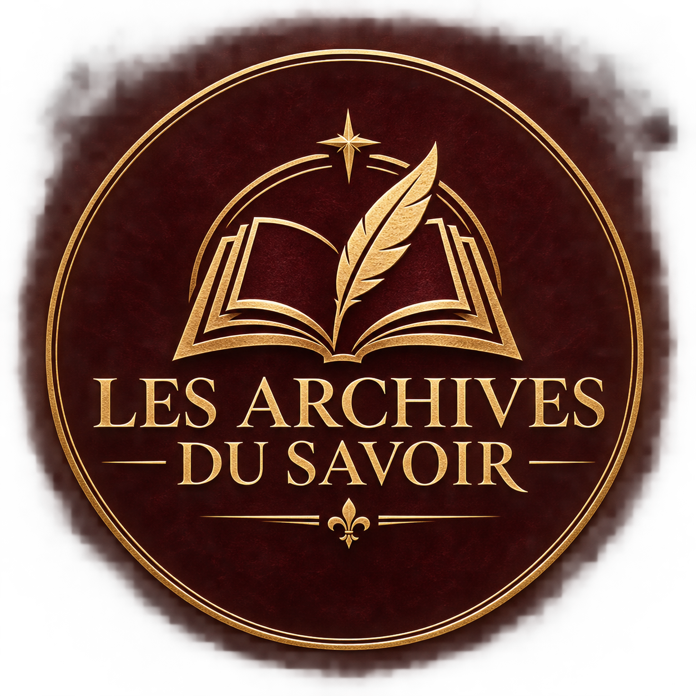

Collectionner
Créez des carnets et composez une bibliothèque à votre image.

LES ARCHIVESVOTRE BIBLIOTHÈQUE PERSONNELLE
Rassemblez vos idées, vos découvertes et vos connaissances dans des carnets qui vous ressemblent.
Une bibliothèque à construire, page après page.
Les idées prennent place.
L’ART DE RASSEMBLER
Les Archives du Savoir donnent une forme à vos connaissances : une bibliothèque personnelle composée de carnets numériques, inspirés des livres que l’on aime garder.
Écrivez à votre rythme, choisissez vos couvertures et retrouvez vos pages dans un univers pensé pour la lecture.
Créez des carnets et composez une bibliothèque à votre image.
Rassemblez vos notes et vos images au fil des pages.
Organisez vos lectures avec des favoris et des marque-pages.
COMMENCER VOTRE COLLECTION
Choisissez votre système et son architecture. Les installateurs apparaîtront ici dès leur publication.
Chargement des disponibilités…
64 bits · x64
64 bits · ARM
Debian / Ubuntu · AMD64
Debian / Ubuntu · ARM64
Avant une mise à jour : fermez l’application et sauvegardez vos données locales. Une installation séparée peut utiliser les mêmes données qu’une version précédente.
VOS CONNAISSANCES ONT UNE HISTOIRE